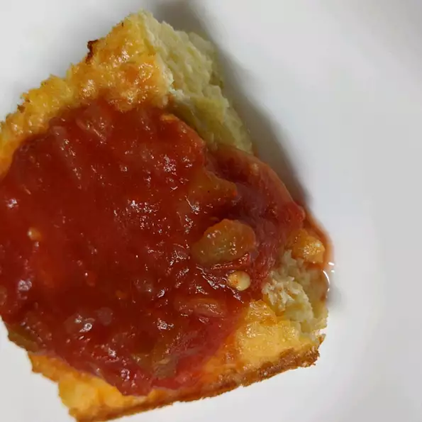

Green Chile Frittata

Description
TThis rich recipe is great for either a brunch or breakfast. You can make this a
day ahead if you want to serve it for an early morning breakfast.
Just reheat in the microwave. You may use any combination of cheese in this recipe,
even non-fat.
Ingredients
- 10 eggs, beaten
- ½ cup all-purpose flour
- 1 teaspoon baking powder
- 1 pinch salt
- 1 (7 ounce) can diced green chile peppers, drained
- 1 (16 ounce) container low-fat cottage cheese
- 1 cup shredded Cheddar cheese
- ¼ cup melted butter
Steps
- Preheat oven to 400 degrees F (200 degrees C).
Lightly grease a 9x13 inch baking dish.
- In a large bowl, mix the eggs, flour, baking powder, and salt.
Stir in the green chile peppers, cottage cheese, Cheddar cheese,
and melted butter. Pour into the prepared baking dish.
- Bake 15 minutes in the preheated oven. Reduce heat to 325 degrees F (
165 degrees C), and continue baking for 35 to 40 minutes. Cool slightly,
and cut into small squares.